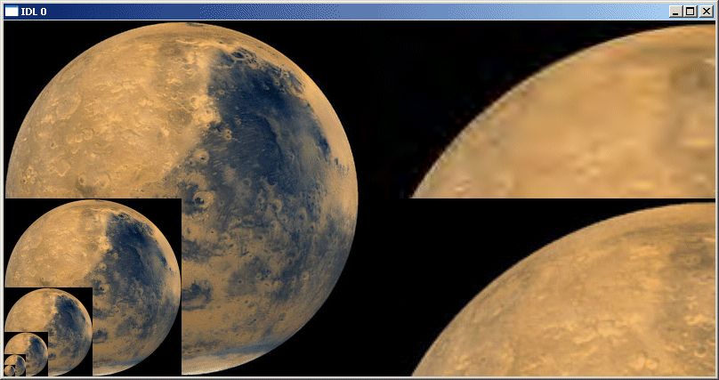

The READ_JPEG2000 function extracts and returns image data from a JPEG2000 file. This function is a wrapper around the IDLffJPEG2000 object interface that presents JPEG2000 image loading in a familiar way to users of the READ_* image routines. However this function is not as efficient as the object interface and the object interface should be used whenever possible. See IDLffJPEG2000 for information about the object interface.
Result = READ_JPEG2000( Filename [, Red , Green , Blue ] [, DISCARD_LEVELS = value ] [, MAX_LAYERS = value ] [, / ORDER ] [, REGION =[ StartX , StartY , Width , Height ] ] )
The Result is a two or three-dimensional array containing the image data. The dimensions of the result are [ nComponents , Width , Height ], where nComponents is the number of components present in the file. Images with only one component will be returned as a two dimensional array [ Width , Height ].
The data type of the result is automatically determined using the bit-depth and signed properties of the returned components. For bit-depth = 8 the result will be of type byte. For bit-depths ≥ 9 and ≤ 16 the result will be of type integer or uint. For bit-depths > 16 the result will be long or ulong. Components with differing bit-depths will be returned using the largest bit-depth. Components which are a mix of signed and unsigned will be returned as signed.
Note: The returned image is automatically ordered from bottom-to-top, where the first pixel returned is located at the bottom-left corner of the image. The ORDER keyword may be used to override this behavior.
A scalar string containing the full path and filename of the JPEG2000 file to read.
Set these arguments to named variables that will contain the Red, Green, and Blue color vectors of the color palette from the file.
Set this keyword to an integer giving the number of highest resolution levels which will not appear in the result.
The resulting image dimensions are given by:
CEIL((Dimensions + Offset)/(2^DL)) - CEIL(Offset/(2^DL))
where Dimensions and Offset are the image dimensions and offset, and DL is the value of DISCARD_LEVELS.
For example, if the image in the file has dimensions of 1024 x 1026, and DISCARD_LEVELS is set to 3, the resulting image will have dimensions of 128 x 129, which is the ceiling of [1024, 1026] divided by 2 3 . The number of resolution levels in a file may be determined by checking the value of the N_LEVELS field within the QUERY_JPEG2000 structure.
Set this keyword to an integer giving the maximum number of quality layers which will be returned in the result. Each layer contains the information required to represent the image at a higher quality, given the information from all the previous layers. A value of 0, the default, implies that all layers should be returned. For example, specifying MAX_LAYERS=4 processes only the first four quality layers. The number of quality layers in a file may be determined by checking the value of the N_LAYERS field within the QUERY_JPEG2000 structure.
JPEG2000 images are assumed to be stored in top-to-bottom order, while IDL usually assumes images are in bottom-to-top order. By default (ORDER = 0), READ_JPEG2000 will automatically flip the result to match IDL's bottom-to-top order. Setting ORDER to a nonzero value will return the JPEG2000 image without doing the vertical flip.
Set this keyword to a four-element vector containing the rectangular region of the image to read, in the canvas coordinate system. The region is specified as [ StartX , StartY , Width , Height ], where StartX and StartY must be in the range 0...2 32 -2, and Width and Height must be in the range 1 ... 2 32 -1. The region must contain at least some portion of the image, or an error will occur. If the region is larger than the image, or extends outside of the image, then only that portion that lies within the image will be returned.
Note: The region parameters should be specified in the canvas coordinate system, taking into account the canvas offset and canvas dimensions. The dimensions and offset may be determined from the QUERY_JPEG2000 structure. See The JPEG2000 Canvas Coordinate System for more information.
; Read in a 24-bit JPEG image.
input = FILEPATH('marsglobe.jpg', SUBDIR=['examples','data'])
READ_JPEG, input, image
; Create a JPEG2000 with 6 quality layers.
WRITE_JPEG2000, 'marsglobe.jp2', image, N_LAYERS=6
; Verify the file information.
success = QUERY_JPEG2000('marsglobe.jp2', info)
help, info, /STRUCT
WINDOW, 0, XSIZE=2*info.dimensions[0], YSIZE=info.dimensions[1]
; Use the DISCARD_LEVELS keyword.
for discard=0,5 do TV, /TRUE, $
READ_JPEG2000('marsglobe.jp2', DISCARD_LEVELS=discard)
; Extract a region.
image = READ_JPEG2000('marsglobe.jp2', $
REGION=[0,0,200,100])
TV, REBIN(image, 3, 400, 200), 400, 0, /TRUE
; Use the MAX_LAYERS keyword.
image = READ_JPEG2000('marsglobe.jp2', MAX_LAYERS=1, $
REGION=[0,0,200,100])
TV, REBIN(image, 3, 400, 200), 400, 200, /TRUE
|
 |
In the previous figure, the left-hand side shows the full resolution image, plus the 5 lower resolution versions (DISCARD_LEVELS=1,2,3,4,5). The right-hand side shows a magnified portion of the full quality image (bottom), and a lower quality version (top, MAX_LAYERS=1).
|
6.1 |
Introduced |
IOPEN , QUERY_JPEG2000 , WRITE_JPEG2000